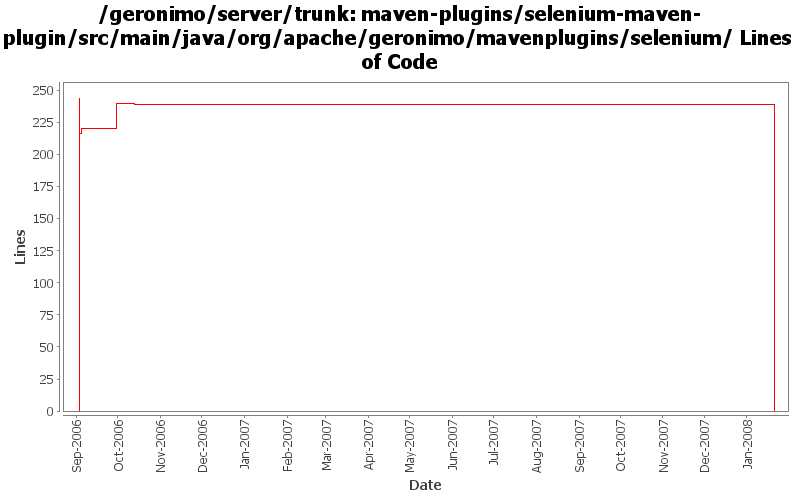

[root]/maven-plugins/selenium-maven-plugin/src/main/java/org/apache/geronimo/mavenplugins/selenium

| Author | Changes | Lines of Code | Lines per Change |
|---|---|---|---|
| Totals | 23 (100.0%) | 481 (100.0%) | 20.9 |
| jdillon | 21 (91.3%) | 451 (93.8%) | 21.4 |
| kevan | 2 (8.7%) | 30 (6.2%) | 15.0 |
(GERONIMO-3771) Moved maven-plugins/* to buildsupport/*, updated groupId to org.apache.geronimo.buildsupport
0 lines of code changed in 2 files:
GERONIMO-2537 Update the src headers in the non-module files. They need to be compliant with the new ASF src header and copyright policy (http://www.apache.org/legal/src-headers.html). I also did some cleanup of the src headers and tried to get them in a consistent format
30 lines of code changed in 2 files:
Do not let ant log errors... allow all output to be captured by the log file
0 lines of code changed in 1 file:
Update to reflect latest genesis changes
2 lines of code changed in 1 file:
Refactor logging/output handling, now has only one output file and can take controls from -D params
47 lines of code changed in 2 files:
Use ObjectHolder instead of Throwable to hold errors in the runner thread
6 lines of code changed in 1 file:
Update to use new license headers
15 lines of code changed in 1 file:
Update to reflect new package names for some genesis bits
Moved JCL Log adapter to plugin-support
6 lines of code changed in 1 file:
Join the thread don't wait
2 lines of code changed in 1 file:
Added background flag to allow start to block or not block
Default is block, so that mvn selenium:start can be used for development
15 lines of code changed in 1 file:
Drop unused hooks
0 lines of code changed in 1 file:
Hooked up Log4j to capture Jetty logs
Capture server.out and server.err to keep bits from showing up in the mvn output
51 lines of code changed in 1 file:
Update site docs
0 lines of code changed in 1 file:
Don't delete generated .js on exit, reuse
6 lines of code changed in 1 file:
Using Java task to start Selenium
Try to be smart(er) about detecting when its online
Changed user-extensions.js location to target/selenium
Added target/selenium/server.out
98 lines of code changed in 1 file:
Adding support for a default set of user extentions, and merging with local if needed
138 lines of code changed in 1 file:
Added some info logging
Using SimpleLog instead of JDK 1.4 logging for now
18 lines of code changed in 1 file:
Support -userExtensions
15 lines of code changed in 1 file:
Support -debug, -port and -timeout arguments to the selenium server
32 lines of code changed in 1 file:
Plugin to start the Selenium server
0 lines of code changed in 1 file: